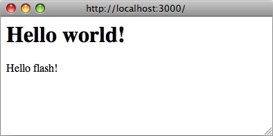
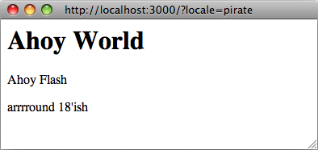
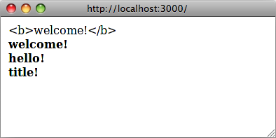

El marco Ruby I18n le proporciona todos los medios necesarios para la internacionalización/localización de su aplicación Rails. También puede usar varias gemas disponibles para agregar funciones o características adicionales. Consulte la gema rails-i18n para obtener más información.
1 How I18n in Ruby on Rails Works
La internacionalización es un problema complejo. Los lenguajes naturales difieren de tantas maneras (por ejemplo, en las reglas de pluralización) que es difícil proporcionar herramientas para resolver todos los problemas a la vez. Por esa razón, la API Rails I18n se centra en:
- proporciona soporte para inglés y otros idiomas similares desde el primer momento.
- facilita la personalización y ampliación de todo para otros idiomas
Como parte de esta solución, cada cadena estática en el marco de Rails, p. Ej. Mensajes de validación de Active Record, formatos de fecha y hora - se ha internacionalizado. Localización de una aplicación Rails significa definir valores traducidos para estas cadenas en los idiomas deseados.
Para localizar, almacenar y actualizar contenido en su aplicación (por ejemplo, traducir publicaciones de blog), consulte la sección Translating model content.
1.1 The Overall Architecture of the Library
Por lo tanto, la gema Ruby I18n se divide en dos partes:
- La API pública del marco i18n: un módulo Ruby con métodos públicos que definen cómo funciona la biblioteca.
- Un backend predeterminado (que se llama intencionalmente Simple backend) que implementa estos métodos
Como usuario, siempre debe acceder solo a los métodos públicos en el módulo I18n, pero es útil conocer las capacidades del backend.
Es posible intercambiar el backend Simple enviado por uno más potente, que almacenaría datos de traducción en una base de datos relacional, diccionario GetText o similar. Consulte la sección Using different backends a continuación.
1.2 The Public I18n API
Los métodos más importantes de la API I18n son:
translate # Lookup text translations
localize # Localize Date and Time objects to local formats
Estos tienen los alias #t y #l, por lo que puede usarlos así:
I18n.t 'store.title'
I18n.l Time.now
También hay lectores y escritores de atributos para los siguientes atributos:
load_path # Announce your custom translation files
locale # Get and set the current locale
default_locale # Get and set the default locale
available_locales # Permitted locales available for the application
enforce_available_locales # Enforce locale permission (true or false)
exception_handler # Use a different exception_handler
backend # Use a different backend
Entonces, ¡Internacionalicemos una aplicación Rails simple desde cero en los próximos capítulos!
2 Setup the Rails Application for Internationalization
Hay algunos pasos para comenzar a utilizar el soporte I18n para una aplicación Rails.
2.1 Configure the I18n Modu
Siguiendo la filosofía de convención sobre la configuración, Rails I18n proporciona cadenas de traducción predeterminadas razonables. Cuando se necesitan diferentes cadenas de traducción, se pueden anular.
Rails agrega todos los archivos .rb y .yml del directorio config/locales a la ** ruta de carga de traducciones **, automáticamente.
La configuración regional predeterminada en.yml en este directorio contiene un par de ejemplos de cadenas de traducción:
en:
hello: "Hello world"
This means, that in the :en locale, the key hello will map to the Hello world string. Every string inside Rails is internationalized in this way, see for instance Active Model validation messages in the activemodel/lib/active_model/locale/en.yml file or time and date formats in the activesupport/lib/active_support/locale/en.yml file. You can use YAML or standard Ruby Hashes to store translations in the default (Simple) backend.
Esto significa que en la configuración regional :en, la clave hello se asignará a la cadena Hello world. Cada cadena dentro de Rails se internacionaliza de esta manera, vea, por ejemplo, los mensajes de validación del modelo activo en el activemodel/lib/active_model/locale/en.yml o formatos de fecha y hora en activesupport/lib/active_support/locale/en.yml. Puede usar YAML o Ruby Hashes estándar para almacenar traducciones en el backend predeterminado (Simple).
La biblioteca I18n usará inglés como configuración regional predeterminada, es decir, si no se establece una configuración regional diferente, se usará :en para buscar traducciones.
La biblioteca i18n adopta un enfoque pragmático para las claves de configuración regional (después de some discussion), que incluye solo la parte locale ("idioma"), como en, :pl, no la parte region, como :" en-US " o :" en-GB ", que se utilizan tradicionalmente para separando "idiomas" y "entorno regional" o "dialectos". Muchas aplicaciones internacionales usan solo el elemento "idioma" de una configuración regional como cs,:th o :es (para checo, tailandés y español). Sin embargo, también existen diferencias regionales dentro de los diferentes grupos de idiomas que pueden ser importantes. Por ejemplo, en la configuración regional :" en-US " tendría $ como símbolo de moneda, mientras que en :" en-GB ", tendría £. Nada le impide separar la configuración regional de otra de esta manera: solo tiene que proporcionar la configuración regional completa "Inglés - Reino Unido" en un diccionario :" en-GB ".
La ruta de carga de traducciones (I18n.load_path) es una matriz de rutas a archivos que se cargarán automáticamente. La configuración de esta ruta permite personalizar la estructura del directorio de traducciones y el esquema de nombres de archivos.
El backend carga lentamente estas traducciones cuando se busca una traducción por primera vez. Este backend se puede intercambiar con otra cosa incluso después de que ya se hayan anunciado las traducciones.
Puede cambiar la configuración regional predeterminada y configurar las rutas de carga de traducciones en config/application.rb de la siguiente manera:
config.i18n.load_path += Dir[Rails.root.join('my', 'locales', '*.{rb,yml}')]
config.i18n.default_locale = :de
La ruta de carga debe especificarse antes de buscar cualquier traducción. Para cambiar la configuración regional predeterminada de un inicializador en lugar de config/application.rb:
# config/initializers/locale.rb
# Where the I18n library should search for translation files
I18n.load_path += Dir[Rails.root.join('lib', 'locale', '*.{rb,yml}')]
# Permitted locales available for the application
I18n.available_locales = [:en, :pt]
# Set default locale to something other than :en
I18n.default_locale = :pt
Tenga en cuenta que agregar directamente a I18n.load_path en lugar de al i18n configurado de la aplicación no anulará las traducciones de gemas externas.
2.2 Managing the Locale across Requests
Es probable que una aplicación localizada deba brindar soporte para múltiples configuraciones regionales. Para lograr esto, la configuración regional debe establecerse al principio de cada solicitud para que todas las cadenas se traduzcan utilizando la configuración regional deseada durante la vida útil de esa solicitud.
La configuración regional predeterminada se usa para todas las traducciones a menos que se use I18n.locale= o I18n.with_locale.
I18n.locale puede filtrarse en las solicitudes posteriores atendidas por el mismo hilo / proceso si no se configura de manera consistente en todos los controladores. Por ejemplo, la ejecución de I18n.locale =: es en una solicitud POST tendrá efectos para todas las solicitudes posteriores a los controladores que no establecen la configuración regional, sino solo en ese hilo/proceso en particular. Por esa razón, en lugar de I18n.locale= puede usar I18n.with_locale, que no tiene este problema de fuga.
La configuración regional se puede establecer en un around_action en elApplicationController:
around_action :switch_locale
def switch_locale(&action)
locale = params[:locale] || I18n.default_locale
I18n.with_locale(locale, &action)
end
Este ejemplo ilustra esto usando un parámetro de consulta de URL para establecer la configuración regional (por ejemplo, http://example.com/books?locale=pt). Con este enfoque, http://localhost:3000?locale=pt representa la localización portuguesa, mientras que http://localhost:3000?locale=de carga una localización alemana.
La configuración regional se puede establecer mediante uno de los muchos enfoques diferentes.
2.2.1 Setting the Locale from the Domain Name
Una opción que tiene es establecer la configuración regional desde el nombre de dominio donde se ejecuta su aplicación. Por ejemplo, queremos que www.example.com cargue la configuración regional en inglés (o la predeterminada) y www.example.es para cargar la configuración regional en español. Por tanto, el nombre de dominio de nivel superior se utiliza para la configuración regional. Esto tiene varias ventajas:
- La configuración regional es una parte obvia de la URL.
- Las personas comprenden intuitivamente en qué idioma se mostrará el contenido.
- Es muy trivial de implementar en Rails.
- A los motores de búsqueda parece gustarles que el contenido en diferentes idiomas se encuentre en dominios diferentes e interconectados.
Puedes implementarlo así en tu ApplicationController:
around_action :switch_locale
def switch_locale(&action)
locale = extract_locale_from_tld || I18n.default_locale
I18n.with_locale(locale, &action)
end
# Get locale from top-level domain or return +nil+ if such locale is not available
# You have to put something like:
# 127.0.0.1 application.com
# 127.0.0.1 application.it
# 127.0.0.1 application.pl
# in your /etc/hosts file to try this out locally
def extract_locale_from_tld
parsed_locale = request.host.split('.').last
I18n.available_locales.map(&:to_s).include?(parsed_locale) ? parsed_locale : nil
end
También podemos configurar la configuración regional desde el subdominio de una manera muy similar:
# Get locale code from request subdomain (like http://it.application.local:3000)
# You have to put something like:
# 127.0.0.1 gr.application.local
# in your /etc/hosts file to try this out locally
def extract_locale_from_subdomain
parsed_locale = request.subdomains.first
I18n.available_locales.map(&:to_s).include?(parsed_locale) ? parsed_locale : nil
end
Si su aplicación incluye un menú de cambio de configuración regional, entonces tendría algo como esto:
link_to("Deutsch", "#{APP_CONFIG[:deutsch_website_url]}#{request.env['PATH_INFO']}")
asumiendo que establecería APP_CONFIG[:deutsch_website_url] en algún valor como http://www.application.de.
Esta solución tiene las ventajas mencionadas anteriormente, sin embargo, es posible que no pueda o no desee proporcionar diferentes localizaciones ("versiones de idioma") en diferentes dominios. La solución más obvia sería incluir el código local en los parámetros de la URL (o la ruta de la solicitud).
2.2.2 Setting the Locale from URL Params
La forma más habitual de configurar (y pasar) la configuración regional sería incluirla en los parámetros de la URL, como hicimos en I18n.with_locale (params [: locale], & action) around_action en el primer ejemplo. Nos gustaría tener URL como www.example.com/books?Locale=ja o www.example.com/ja/books en este caso.
Este enfoque tiene casi el mismo conjunto de ventajas que establecer la configuración regional desde el nombre de dominio: es decir, que es RESTful y está de acuerdo con el resto de la World Wide Web. Sin embargo, requiere un poco más de trabajo para implementar.
Obtener la configuración regional de params y configurarla en consecuencia no es difícil; incluirlo en cada URL y, por lo tanto, ** pasarlo a través de las solicitudes ** es. Para incluir una opción explícita en cada URL, p. Ej. link_to (books_url (locale: I18n.locale)), sería tedioso y probablemente imposible, por supuesto.
Rails contiene infraestructura para "centralizar decisiones dinámicas sobre las URL" en su ApplicationController#default_url_options, que es útil precisamente en este escenario: nos permite establecer "valores predeterminados" para url_for y métodos auxiliares que dependen de él (mediante la implementación/anulación default_url_options).
Podemos incluir algo como esto en nuestro ApplicationController entonces:
# app/controllers/application_controller.rb
def default_url_options
{ locale: I18n.locale }
end
Todos los métodos auxiliares que dependen de url_for (por ejemplo, ayudantes para rutas con nombre como root_path o root_url, rutas de recursos como books_path o books_url, etc.) ahora incluirán automáticamente la configuración regional en la cadena de consulta, así: http://localhost:3001/?locale=ja.
Puede estar satisfecho con esto. Sin embargo, sí afecta la legibilidad de las URL cuando la configuración regional "cuelga" al final de cada URL en su aplicación. Además, desde el punto de vista de la arquitectura, la configuración regional suele estar jerárquicamente por encima de las otras partes del dominio de la aplicación: y las URL deben reflejar esto.
Probablemente desee que las URL se vean así: http://www.example.com/en/books (que carga la configuración regional en inglés) yhttp: // www.example.com / nl / books (que carga la configuración regional holandesa). Esto se puede lograr con la estrategia "over-ridingdefault_url_options "de arriba: solo tienes que configurar tus rutas con scope:
# config/routes.rb
scope "/:locale" do
resources :books
end
Ahora, cuando llame al método books_path debería obtener"/en/books"(para la configuración regional predeterminada). Una URL como http://localhost:3001/nl/books debería cargar la configuración regional holandesa, luego, y las siguientes llamadas a books_path deberían devolver "/nl/books " (porque la configuración regional cambió).
Dado que el valor de retorno de default_url_options se almacena en caché por solicitud, las URL en un selector de configuración regional no se pueden generar invocando ayudantes en un bucle que establece el correspondiente I18n.locale en cada iteración. En su lugar, deje intacto I18n.locale y pase una opción explícita :locale al asistente, o edite request.original_fullpath.
Si no desea forzar el uso de una configuración regional en sus rutas, puede usar un alcance de ruta opcional (indicado por los paréntesis) así:
# config/routes.rb
scope "(:locale)", locale: /en|nl/ do
resources :books
end
Con este enfoque, no obtendrá un Routing Error cuando acceda a sus recursos como http://localhost:3001/books sin una configuración regional. Esto es útil cuando desea utilizar la configuración regional predeterminada cuando no se especifica ninguna.
Por supuesto, debe tener especial cuidado con la URL raíz (generalmente "página de inicio" o "tablero") de su aplicación. Una URL como http://localhost:3001/nl no funcionará automáticamente, porque la declaración root to: "books#index" en tu routes.rb no tiene en cuenta la configuración regional. (Y con razón: solo hay una URL "root").
Probablemente necesite mapear URL como estas:
# config/routes.rb
get '/:locale' => 'dashboard#index'
Tenga especial cuidado con el orden de sus rutas, para que esta declaración de ruta no se "coma" a otras. (Es posible que desee agregarlo directamente antes de la declaración root: to).
Eche un vistazo a varias gemas que simplifican el trabajo con rutas: routing_filter, rails-translate-routes, route_translator.
2.2.3 Setting the Locale from User Preferences
Una aplicación con usuarios autenticados puede permitir a los usuarios establecer una preferencia de configuración regional a través de la interfaz de la aplicación. Con este enfoque, la preferencia de configuración regional seleccionada por un usuario se conserva en la base de datos y se utiliza para establecer la configuración regional para las solicitudes autenticadas de ese usuario.
around_action :switch_locale
def switch_locale(&action)
locale = current_user.try(:locale) || I18n.default_locale
I18n.with_locale(locale, &action)
end
2.2.4 Choosing an Implied Locale
Cuando no se ha establecido una configuración regional explícita para una solicitud (por ejemplo, a través de uno de los métodos anteriores), una aplicación debe intentar inferir la configuración regional deseada.
2.2.4.1 Inferring Locale from the Language Header
El encabezado HTTP Accept-Language indica el idioma preferido para la respuesta de la solicitud. Navegadores set this header value based on the user's language preference settings, lo que lo convierte en una buena primera opción al inferir una configuración regional.
Una implementación trivial de usar un encabezado Accept-Language sería:
def switch_locale(&action)
logger.debug "* Accept-Language: #{request.env['HTTP_ACCEPT_LANGUAGE']}"
locale = extract_locale_from_accept_language_header
logger.debug "* Locale set to '#{locale}'"
I18n.with_locale(locale, &action)
end
private
def extract_locale_from_accept_language_header
request.env['HTTP_ACCEPT_LANGUAGE'].scan(/^[a-z]{2}/).first
end
En la práctica, se necesita un código más robusto para hacer esto de manera confiable. La biblioteca de Iain Hecker http_accept_language o de Ryan Tomayko locale el middleware en rack proporciona soluciones a este problema.
2.2.4.2 Inferring the Locale from IP Geolocation
La dirección IP del cliente que realiza la solicitud se puede utilizar para inferir la región del cliente y, por lo tanto, su ubicación. Se pueden utilizar servicios como GeoIP Lite Country o gemas como geocoder para implementar este enfoque.
En general, este enfoque es mucho menos confiable que usar el encabezado de idioma y no se recomienda para la mayoría de las aplicaciones web.
2.2.5 Storing the Locale from the Session or Cookies
Puede tener la tentación de almacenar la configuración regional elegida en una sesión o una cookie. Sin embargo, no hagas esto. La configuración regional debe ser transparente y formar parte de la URL. De esta manera, no romperá las suposiciones básicas de las personas sobre la web en sí: si envía una URL a un amigo, debería ver la misma página y el mismo contenido que usted. Una palabra elegante para esto sería que estás siendo RESTful. Lea más sobre el enfoque RESTful en los Stefan Tilkov's articles. A veces hay excepciones a esta regla y se analizan a continuación.
3 Internationalization and Localization
¡OKAY! Ahora ha inicializado la compatibilidad con I18n para su aplicación Ruby on Rails y le ha dicho qué configuración regional debe usar y cómo conservarla entre solicitudes.
A continuación, necesitamos internationalize nuestra aplicación abstrayendo cada elemento específico de la configuración regional. Finalmente, necesitamos localizar proporcionando las traducciones necesarias para estos resúmenes.
Dado el siguiente ejemplo:
# config/routes.rb
Rails.application.routes.draw do
root to: "home#index"
end
# app/controllers/application_controller.rb
class ApplicationController < ActionController::Base
around_action :switch_locale
def switch_locale(&action)
locale = params[:locale] || I18n.default_locale
I18n.with_locale(locale, &action)
end
end
# app/controllers/home_controller.rb
class HomeController < ApplicationController
def index
flash[:notice] = "Hello Flash"
end
end
# app/views/home/index.html.erb
<h1>Hello World</h1>
<p><%= flash[:notice] %></p>

3.1 Abstracting Localized Code
Hay dos cadenas en nuestro código que están en inglés y que los usuarios aparecerán en nuestra respuesta ("Hello Flash" y "Hello World"). Para internacionalizar este código, estas cadenas deben ser reemplazadas por llamadas al ayudante # t de Rails con una clave apropiada para cada cadena:
# app/controllers/home_controller.rb
class HomeController < ApplicationController
def index
flash[:notice] = t(:hello_flash)
end
end
# app/views/home/index.html.erb
<h1><%= t :hello_world %></h1>
<p><%= flash[:notice] %></p>
Ahora, cuando se renderice esta vista, mostrará un mensaje de error que le indicará que faltan las traducciones de las claves :hello_world y :hello_flash.

Rails agrega un método auxiliar t (translate) a sus vistas para que no tenga que escribir I18n.t todo el tiempo. Además, este ayudante detectará las traducciones que falten y envolverá el mensaje de error resultante en un <span class ="translation_missing">.
3.2 Providing Translations for Internationalized Strings
Agregue las traducciones que faltan en los archivos del diccionario de traducción:
# config/locales/en.yml
en:
hello_world: Hello world!
hello_flash: Hello flash!
# config/locales/pirate.yml
pirate:
hello_world: Ahoy World
hello_flash: Ahoy Flash
Debido a que el default_locale no ha cambiado, las traducciones usan el locale :en y la respuesta muestra las cadenas en inglés:

Si la configuración regional se establece a través de la URL a la configuración regional pirata (http://localhost:3000?locale=pirate), la respuesta muestra las cadenas piratas:

NOTA: debe reiniciar el servidor cuando agregue nuevos archivos de configuración regional.
Puede usar archivos YAML (.yml) o simples Ruby (.rb) para almacenar sus traducciones en SimpleStore. YAML es la opción preferida entre los desarrolladores de Rails. Sin embargo, tiene una gran desventaja. YAML es muy sensible a los espacios en blanco y a los caracteres especiales, por lo que es posible que la aplicación no cargue su diccionario correctamente. Los archivos Ruby bloquearán su aplicación en la primera solicitud, por lo que puede encontrar fácilmente lo que está mal. (Si encuentra algún "problema extraño" con los diccionarios YAML, intente poner la parte relevante de su diccionario en un archivo Ruby).
Si sus traducciones se almacenan en archivos YAML, ciertas claves deben escaparse. Son:
- cierto, encendido, sí
- falso, apagado, no
Ejemplos:
# config/locales/en.yml
en:
success:
'true': 'True!'
'on': 'On!'
'false': 'False!'
failure:
true: 'True!'
off: 'Off!'
false: 'False!'
I18n.t 'success.true' # => 'True!'
I18n.t 'success.on' # => 'On!'
I18n.t 'success.false' # => 'False!'
I18n.t 'failure.false' # => Translation Missing
I18n.t 'failure.off' # => Translation Missing
I18n.t 'failure.true' # => Translation Missing
3.3 Passing Variables to Translations
Una consideración clave para internacionalizar con éxito una aplicación es Evite hacer suposiciones incorrectas sobre las reglas gramaticales al abstraer localizadas. código. Las reglas gramaticales que parecen fundamentales en un lugar pueden no ser ciertas en otro.
La abstracción incorrecta se muestra en el siguiente ejemplo, donde los supuestos son
sobre el ordenamiento de las diferentes partes de la traducción. Tenga en cuenta que Rails
proporciona un ayudante number_to_currency para manejar el siguiente caso.
# app/views/products/show.html.erb
<%= "#{t('currency')}#{@product.price}" %>
# config/locales/en.yml
en:
currency: "$"
# config/locales/es.yml
es:
currency: "€"
Si el precio del producto es 10, la traducción correcta al español es "10 €". en lugar de "10 €" pero la abstracción no puede darlo.
Para crear una abstracción adecuada, la gema I18n se envía con una característica llamada variable interpolación que le permite utilizar variables en definiciones de traducción y pasar los valores de estas variables al método de traducción.
La abstracción adecuada se muestra en el siguiente ejemplo:
# app/views/products/show.html.erb
<%= t('product_price', price: @product.price) %>
# config/locales/en.yml
en:
product_price: "$%{price}"
# config/locales/es.yml
es:
product_price: "%{price} €"
Todas las decisiones gramaticales y de puntuación se toman en la propia definición, por lo que la abstracción puede dar una traducción adecuada.
Las palabras clave default y scope están reservadas y no se pueden usar como
nombres de variables. Si se usa, se genera una excepción I18n::ReservedInterpolationKey.
Si una traducción espera una variable de interpolación, pero esta no se ha pasado
a #translate, se genera una excepción I18n::MissingInterpolationArgument.
3.4 Adding Date/Time Formats
¡OKAY! Ahora agreguemos una marca de tiempo a la vista, para que también podamos hacer una demostración de la función de date/time localization. Para localizar el formato de hora, pasa el objeto Time a I18n.l o (preferiblemente) usa el asistente #l de Rails. Puede elegir un formato pasando la opción :formato; por defecto, se usa el formato :predeterminado.
# app/views/home/index.html.erb
<h1><%= t :hello_world %></h1>
<p><%= flash[:notice] %></p>
<p><%= l Time.now, format: :short %></p>
Y en nuestro archivo de traducciones piratas agreguemos un formato de hora (ya está allí en los valores predeterminados de Rails para inglés):
# config/locales/pirate.yml
pirate:
time:
formats:
short: "arrrround %H'ish"
Entonces eso te daría:

En este momento, es posible que deba agregar algunos formatos de fecha/hora más para que el backend I18n funcione como se espera (al menos para la configuración regional 'pirata'). Por supuesto, existe una gran posibilidad de que alguien ya haya hecho todo el trabajo ** traduciendo los valores predeterminados de Rails para su configuración regional **. Consulte el rails-i18n repository at GitHub para obtener un archivo de varios archivos de configuración regional. Cuando coloque dichos archivos en el directorio config/locales/, automáticamente estarán listos para su uso.
3.5 Inflection Rules for Other Locales
Rails le permite definir reglas de inflexión (como reglas de singularización y pluralización) para configuraciones regionales distintas del inglés. En config/initializers/inflections.rb, puede definir estas reglas para múltiples configuraciones regionales. El inicializador contiene un ejemplo predeterminado para especificar reglas adicionales para inglés; siga ese formato para otras configuraciones regionales como mejor le parezca.
3.6 Localized Views
Supongamos que tiene un BooksController en su aplicación. Su acción index muestra el contenido en la plantilla app/views/books/index.html.erb. Cuando pones una variante localizada de esta plantilla: index.es.html.erb en el mismo directorio, Rails renderizará el contenido en esta plantilla, cuando la configuración regional esté configurada en :es. Cuando la configuración regional se establece en la configuración regional predeterminada, se utilizará la vista genérica index.html.erb. (Las versiones de Future Rails bien pueden llevar esta localización automagic a los activos en public, etc.)
Puede hacer uso de esta función, p. Ej. cuando se trabaja con una gran cantidad de contenido estático, que sería torpe de poner dentro de los diccionarios YAML o Ruby. Sin embargo, tenga en cuenta que cualquier cambio que desee hacer más adelante en la plantilla debe propagarse a todos ellos.
3.7 Organization of Locale Files
Cuando utiliza SimpleStore predeterminado que se envía con la biblioteca i18n, los diccionarios se almacenan en archivos de texto sin formato en el disco. Poner traducciones para todas las partes de su aplicación en un archivo por configuración regional podría ser difícil de gestionar. Puede almacenar estos archivos en una jerarquía que tenga sentido para usted.
Por ejemplo, su directorio config/locales podría verse así:
|-defaults
|---es.yml
|---en.yml
|-models
|---book
|-----es.yml
|-----en.yml
|-views
|---defaults
|-----es.yml
|-----en.yml
|---books
|-----es.yml
|-----en.yml
|---users
|-----es.yml
|-----en.yml
|---navigation
|-----es.yml
|-----en.yml
De esta manera, puede separar el modelo y los nombres de los atributos del modelo del texto dentro de las vistas, y todo esto de los "valores predeterminados" (por ejemplo, formatos de fecha y hora). Otras tiendas de la biblioteca i18n podrían proporcionar diferentes medios de separación.
El mecanismo de carga de configuración regional predeterminado en Rails no carga archivos de configuración regional en diccionarios anidados, como lo tenemos aquí. Entonces, para que esto funcione, debemos decirle explícitamente a Rails que busque más:
# config/application.rb
config.i18n.load_path += Dir[Rails.root.join('config', 'locales', '**', '*.{rb,yml}')]
4 Overview of the I18n API Features
Debe tener una buena comprensión del uso de la biblioteca i18n ahora y saber cómo para internacionalizar una aplicación básica de Rails. En los siguientes capítulos, cubrir sus características con más profundidad.
Estos capítulos mostrarán ejemplos que utilizan tanto el método I18n.translate como el translate view helper method (teniendo en cuenta la característica adicional proporcionada por el método de ayuda de vista).
Se cubren características como estas:
- buscar traducciones
- interpolar datos en traducciones
- traducciones pluralizadas
- usando traducciones HTML seguras (ver solo el método auxiliar)
- localización de fechas, números, moneda, etc.
4.1 Looking up Translations
4.1.1 Basic Lookup, Scopes, and Nested Keys
Las traducciones se buscan mediante claves que pueden ser tanto símbolos como cadenas, por lo que estas llamadas son equivalentes:
I18n.t :message
I18n.t 'message'
El método translate también toma una opción :scope que puede contener una o más claves adicionales que se usarán para especificar un "namespace" o alcance para una clave de traducción:
I18n.t :record_invalid, scope: [:activerecord, :errors, :messages]
Esto busca el mensaje :record_invalid en los mensajes de error de Active Record.
Además, tanto la clave como los ámbitos se pueden especificar como claves separadas por puntos como en:
I18n.translate "activerecord.errors.messages.record_invalid"
I18n.t 'activerecord.errors.messages.record_invalid'
I18n.t 'errors.messages.record_invalid', scope: :activerecord
I18n.t :record_invalid, scope: 'activerecord.errors.messages'
I18n.t :record_invalid, scope: [:activerecord, :errors, :messages]
Thus the following calls are equivalent:
4.1.2 Defaults
Cuando se da una opción :default, su valor se devolverá si falta la traducción:
I18n.t :missing, default: 'Not here'
# => 'Not here'
Si el valor :default es un símbolo, se utilizará como clave y se traducirá. Se pueden proporcionar varios valores por defecto. Se devolverá el primero que dé como resultado un valor.
Por ejemplo, lo siguiente primero intenta traducir la clave : missing y luego la clave:missing. Dado que ambos no dan un resultado, se devolverá la cadena "No aquí":
I18n.t :missing, default: [:also_missing, 'Not here']
# => 'Not here'
4.1.3 Bulk and Namespace Lookup
Para buscar varias traducciones a la vez, se puede pasar una matriz de claves:
I18n.t [:odd, :even], scope: 'errors.messages'
# => ["must be odd", "must be even"]
Además, una clave puede traducirse en un hash (potencialmente anidado) de traducciones agrupadas. Por ejemplo, uno puede recibir todos los mensajes de error de Active Record como un Hash con:
I18n.t 'activerecord.errors.messages'
# => {:inclusion=>"is not included in the list", :exclusion=> ... }
Si desea realizar la interpolación en un hash masivo de traducciones, debe pasar deep_interpolation: true como parámetro. Cuando tenga el siguiente diccionario:
en:
welcome:
title: "Welcome!"
content: "Welcome to the %{app_name}"
entonces la interpolación anidada se ignorará sin la configuración:
I18n.t 'welcome', app_name: 'book store'
# => {:title=>"Welcome!", :content=>"Welcome to the %{app_name}"}
I18n.t 'welcome', deep_interpolation: true, app_name: 'book store'
# => {:title=>"Welcome!", :content=>"Welcome to the book store"}
4.1.4 "Lazy" Lookup
Rails implementa una forma conveniente de buscar la configuración regional dentro de views. Cuando tenga el siguiente diccionario:
es:
books:
index:
title: "Título"
puede buscar el valor books.index.title ** dentro de la plantilla **app/views/books/index.html.erb como esta (observe el punto):
<%= t '.title' %>
El alcance de la traducción automática por parcial solo está disponible desde el método de ayuda de vista translate.
La búsqueda "Lazy" también se puede utilizar en controladores:
en:
books:
create:
success: Book created!
Esto es útil para configurar mensajes flash, por ejemplo:
class BooksController < ApplicationController
def create
# ...
redirect_to books_url, notice: t('.success')
end
end
4.2 Pluralization
En muchos idiomas, incluido el inglés, solo hay dos formas, un singular y un plural, para una cadena dada, p. ej. "1 mensaje" y "2 mensajes". Otros idiomas (Arabic, Japanese, Russian y muchas más) tienen diferentes gramáticas que tienen menos plural forms. Por tanto, la API I18n proporciona una característica de pluralización flexible.
La variable de interpolación :count tiene un papel especial en el sentido de que se interpola a la traducción y se utiliza para elegir una pluralización de las traducciones de acuerdo con las reglas de pluralización definidas en el
backend de pluralización. De forma predeterminada, solo se aplican las reglas de pluralización en inglés.
I18n.backend.store_translations :en, inbox: {
zero: 'no messages', # optional
one: 'one message',
other: '%{count} messages'
}
I18n.translate :inbox, count: 2
# => '2 messages'
I18n.translate :inbox, count: 1
# => 'one message'
I18n.translate :inbox, count: 0
# => 'no messages'
El algoritmo para pluralizaciones en : en es tan simple como:
lookup_key = :zero if count == 0 && entry.has_key?(:zero)
lookup_key ||= count == 1 ? :one : :other
entry[lookup_key]
La traducción indicada como :one se considera singular, y el :other se usa como plural. Si el recuento es cero y hay una entrada :zero, se utilizará en lugar de :other.
Si la búsqueda de la clave no devuelve un Hash adecuado para la pluralización, se genera una excepción I18n::InvalidPluralizationData.
4.2.1 Locale-specific rules
La gema I18n proporciona un backend de pluralización que se puede utilizar para habilitar reglas específicas de la configuración regional. Incluirlo
al backend simple, luego agregue los algoritmos de pluralización localizados al almacén de traducción, como i18n.plural.rule.
I18n::Backend::Simple.include(I18n::Backend::Pluralization)
I18n.backend.store_translations :pt, i18n: { plural: { rule: lambda { |n| [0, 1].include?(n) ? :one : :other } } }
I18n.backend.store_translations :pt, apples: { one: 'one or none', other: 'more than one' }
I18n.t :apples, count: 0, locale: :pt
# => 'one or none'
Alternativamente, la gem separada rails-i18n can be used to provide a fuller set of locale-specific pluralization rules.
4.3 Setting and Passing a Locale
La configuración regional se puede establecer pseudo-globalmente en I18n.locale (que usaThread.current como, por ejemplo, Time.zone) o se puede pasar como una opción a #translate y #localize .
If no locale is passed, I18n.locale is used:
I18n.locale = :de
I18n.t :foo
I18n.l Time.now
Pasar explícitamente una configuración regional:
I18n.t :foo, locale: :de
I18n.l Time.now, locale: :de
The I18n.locale defaults toI18n.default_locale which defaults to: en. The default locale can be set like this:
I18n.default_locale = :de
4.4 Using Safe HTML Translations
Las claves con un sufijo '_html' y las claves llamadas 'html' están marcadas como seguras para HTML. Cuando los use en las vistas, el HTML no se escapará.
# config/locales/en.yml
en:
welcome: <b>welcome!</b>
hello_html: <b>hello!</b>
title:
html: <b>title!</b>
# app/views/home/index.html.erb
<div><%= t('welcome') %></div>
<div><%= raw t('welcome') %></div>
<div><%= t('hello_html') %></div>
<div><%= t('title.html') %></div>
Sin embargo, la interpolación escapa según sea necesario. Por ejemplo, dado:
en:
welcome_html: "<b>Welcome %{username}!</b>"
puede pasar de forma segura el nombre de usuario establecido por el usuario:
<%# This is safe, it is going to be escaped if needed. %>
<%= t('welcome_html', username: @current_user.username) %>
Las cadenas seguras, por otro lado, se interpolan literalmente.
La conversión automática a texto de traducción segura HTML solo está disponible desde el método auxiliar de visualización translate.

4.5 Translations for Active Record Models
Puede utilizar los métodos Model.model_name.human y Model.human_attribute_name(atributo) para buscar de forma transparente las traducciones de sus nombres de modelo y atributo.
For example when you add the following translations:
en:
activerecord:
models:
user: Customer
attributes:
user:
login: "Handle"
# will translate User attribute "login" as "Handle"
Entonces User.model_name.human (count: 2) devolverá "Clientes". Con count: 1 o sin params devolverá" Customer ".
Si está utilizando una clase que incluye ActiveModel y no hereda de ActiveRecord::Base, reemplace activerecord por activemodel en las rutas clave anteriores.
4.5.1 Error Message Scopes
Los mensajes de error de validación de Active Record también se pueden traducir fácilmente. Active Record le brinda un par de espacios de nombres donde puede colocar las traducciones de sus mensajes para proporcionar diferentes mensajes y traducciones para ciertos modelos, atributos y / o validaciones. También tiene en cuenta de forma transparente la herencia de una sola tabla.
Esto le brinda un medio bastante poderoso para ajustar de manera flexible sus mensajes a las necesidades de su aplicación.
Considere un modelo de usuario con una validación para el atributo de nombre como este:
class User < ApplicationRecord
validates :name, presence: true
end
La clave para el mensaje de error en este caso es :blank. Active Record buscará esta clave en los espacios de nombres:
activerecord.errors.models.[model_name].attributes.[attribute_name]
activerecord.errors.models.[model_name]
activerecord.errors.messages
errors.attributes.[attribute_name]
errors.messages
Por lo tanto, en nuestro ejemplo probará las siguientes claves en este orden y devolverá el primer resultado:
activerecord.errors.models.user.attributes.name.blank
activerecord.errors.models.user.blank
activerecord.errors.messages.blank
errors.attributes.name.blank
errors.messages.blank
Cuando sus modelos utilizan adicionalmente la herencia, los mensajes se buscan en la cadena de herencia.
Por ejemplo, puede tener un modelo de administrador heredado de Usuario:
class Admin < User
validates :name, presence: true
end
Entonces Active Record buscará mensajes en este orden:
activerecord.errors.models.admin.attributes.name.blank
activerecord.errors.models.admin.blank
activerecord.errors.models.user.attributes.name.blank
activerecord.errors.models.user.blank
activerecord.errors.messages.blank
errors.attributes.name.blank
errors.messages.blank
De esta manera, puede proporcionar traducciones especiales para varios mensajes de error en diferentes puntos de la cadena de herencia de sus modelos y en los atributos, modelos o ámbitos predeterminados.
4.5.2 Error Message Interpolation
El nombre del modelo traducido, el nombre del atributo traducido y el valor siempre están disponibles para interpolación como model, attribute y value respectivamente.
Entonces, por ejemplo, en lugar del mensaje de error predeterminado"cannot be blank", puede usar el nombre del atributo así: "Please fill in your %{attribute}".
-
count, cuando esté disponible, se puede usar para pluralizar si está presente:
| validation | with option | message | interpolation |
|---|---|---|---|
| confirmation | - | :confirmation | attribute |
| acceptance | - | :accepted | - |
| presence | - | :blank | - |
| absence | - | :present | - |
| length | :within, :in | :too_short | count |
| length | :within, :in | :too_long | count |
| length | :is | :wrong_length | count |
| length | :minimum | :too_short | count |
| length | :maximum | :too_long | count |
| uniqueness | - | :taken | - |
| format | - | :invalid | - |
| inclusion | - | :inclusion | - |
| exclusion | - | :exclusion | - |
| associated | - | :invalid | - |
| non-optional association | - | :required | - |
| numericality | - | :not_a_number | - |
| numericality | :greater_than | :greater_than | count |
| numericality | :greater_than_or_equal_to | :greater_than_or_equal_to | count |
| numericality | :equal_to | :equal_to | count |
| numericality | :less_than | :less_than | count |
| numericality | :less_than_or_equal_to | :less_than_or_equal_to | count |
| numericality | :other_than | :other_than | count |
| numericality | :only_integer | :not_an_integer | - |
| numericality | :odd | :odd | - |
| numericality | :even | :even | - |
4.6 Translations for Action Mailer E-Mail Subjects
Si no pasa un asunto al método mail, Action Mailer intentará encontrar
en sus traducciones. La búsqueda realizada usará el patrón
<mailer_scope>.<action_name>.subject para construir la clave.
# user_mailer.rb
class UserMailer < ActionMailer::Base
def welcome(user)
#...
end
end
en:
user_mailer:
welcome:
subject: "Welcome to Rails Guides!"
Para enviar parámetros a la interpolación, use el método default_i18n_subject en el correo.
# user_mailer.rb
class UserMailer < ActionMailer::Base
def welcome(user)
mail(to: user.email, subject: default_i18n_subject(user: user.name))
end
end
en:
user_mailer:
welcome:
subject: "%{user}, welcome to Rails Guides!"
4.7 Overview of Other Built-In Methods that Provide I18n Support
Rails usa cadenas fijas y otras localizaciones, como cadenas de formato y otra información de formato en un par de ayudantes. He aquí una breve descripción general.
4.7.1 Action View Helper Methods
distance_of_time_in_wordstraduce y pluraliza su resultado e interpola el número de segundos, minutos, horas, etc. Consulte las traducciones de datetime.distance_in_words.datetime_selectyselect_monthutilice nombres de meses traducidos para completar la etiqueta de selección resultante. Consulte date.month_names para ver las traducciones.datetime_selecttambién busca la opción de pedido de date.order (a menos que pase la opción explícitamente). Todos los ayudantes de selección de fecha traducen el mensaje usando las traducciones en el alcance datetime.prompts alcance si es aplicable.Los
number_to_currency,number_with_precision,number_to_percentage,number_with_delimiter, ynumber_to_human_sizelos ayudantes usan la configuración de formato de número ubicada en el alcance number.
4.7.2 Active Model Methods
model_name.humanyhuman_attribute_nameutilizar traducciones para nombres de modelos y nombres de atributos si están disponibles en el alcance activerecord.models. También admiten traducciones de nombres de clases heredados (por ejemplo, para su uso con STI) como se explicó anteriormente en "Error message scopes".ActiveModel::Errors#generate_message(que se utiliza en las validaciones de Active Model pero también se puede utilizar manualmente)model_name.humanyhuman_attribute_name(véase más arriba). También traduce el mensaje de error y admite traducciones para nombres de clases heredados como se explicó anteriormente en "Error message scopes".ActiveModel::Errors#full_messagesprepends the attribute name to the error message using a separator that will be looked up from errors.format (and which defaults to"%{attribute} %{message}").
4.7.3 Active Support Methods
-
Array#to_sentenceutiliza la configuración de formato como se indica en el alcance support.array.
5 How to Store your Custom Translations
El backend simple que se envía con Active Support le permite almacenar traducciones tanto en formato Ruby como en YAML. 2
Por ejemplo, un Ruby Hash que proporcione traducciones puede verse así:
{
pt: {
foo: {
bar: "baz"
}
}
}
El archivo YAML equivalente se vería así:
pt:
foo:
bar: baz
Como puede ver, en ambos casos la clave de nivel superior es la configuración regional. :foo es una clave de espacio de nombres y :bar es la clave para la traducción "baz".
Aquí hay un ejemplo "real" del archivo YAML de traducciones en.yml de Active Support:
en:
date:
formats:
default: "%Y-%m-%d"
short: "%b %d"
long: "%B %d, %Y"
Por lo tanto, todas las siguientes búsquedas equivalentes devolverán el formato de fecha :short "%b %d":
I18n.t 'date.formats.short'
I18n.t 'formats.short', scope: :date
I18n.t :short, scope: 'date.formats'
I18n.t :short, scope: [:date, :formats]
Generalmente recomendamos usar YAML como formato para almacenar traducciones. Sin embargo, hay casos en los que desea almacenar ruby lambdas como parte de sus datos de configuración regional, por ejemplo para formatos de fecha especiales.
6 Customize your I18n Setup
6.1 Using Different Backends
Por varias razones, el backend simple enviado con Active Support solo hace "lo más simple que podría funcionar" para Ruby on Rails3 ... lo que significa que solo se garantiza que funcione para inglés y, como efecto secundario, idiomas que son muy similares al inglés. Además, el backend simple solo es capaz de leer traducciones, pero no puede almacenarlas dinámicamente en ningún formato.
Sin embargo, eso no significa que esté atrapado con estas limitaciones. La gem Ruby I18n hace que eso sea fácil de intercambiar la implementación de backend simple con algo más que se adapte mejor a sus necesidades, pasando una instancia de backend al setter I18n.backend=.
Por ejemplo, puede reemplazar el backend simple con el backend de cadena para encadenar varios backend juntos. Esto es útil cuando desea utilizar traducciones estándar con un backend simple pero almacenar traducciones de aplicaciones personalizadas en una base de datos u otros backend.
Con el backend de Chain, puede usar el backend de Active Record y volver al backend simple (predeterminado):
I18n.backend = I18n::Backend::Chain.new(I18n::Backend::ActiveRecord.new, I18n.backend)
6.2 Using Different Exception Handlers
La API I18n define las siguientes excepciones que generarán los backends cuando se produzcan las condiciones inesperadas correspondientes:
MissingTranslationData # no translation was found for the requested key
InvalidLocale # the locale set to I18n.locale is invalid (e.g. nil)
InvalidPluralizationData # a count option was passed but the translation data is not suitable for pluralization
MissingInterpolationArgument # the translation expects an interpolation argument that has not been passed
ReservedInterpolationKey # the translation contains a reserved interpolation variable name (i.e. one of: scope, default)
UnknownFileType # the backend does not know how to handle a file type that was added to I18n.load_path
El API I18n detectará todas estas excepciones cuando se introduzcan en el backend y las pase al método default_exception_handler. Este método volverá a generar todas las excepciones excepto las excepciones "MissingTranslationData". Cuando se detecta una excepción "MissingTranslationData", devolverá la cadena del mensaje de error de la excepción que contiene la clave / alcance que falta.
El razón de esto es que durante el desarrollo, por lo general, querrá que sus vistas aún se muestren aunque falte una traducción.
Sin embargo, en otros contextos, es posible que desee cambiar este comportamiento. P.ej. el manejo de excepciones predeterminado no permite detectar fácilmente las traducciones que faltan durante las pruebas automatizadas. Para este propósito, se puede especificar un manejador de excepciones diferente. El manejador de excepciones especificado debe ser un método en el módulo I18n o una clase con el método #call:
module I18n
class JustRaiseExceptionHandler < ExceptionHandler
def call(exception, locale, key, options)
if exception.is_a?(MissingTranslation)
raise exception.to_exception
else
super
end
end
end
end
I18n.exception_handler = I18n::JustRaiseExceptionHandler.new
Esto volvería a generar solo la excepción MissingTranslationData, pasando todas las demás entradas al controlador de excepciones predeterminado.
Sin embargo, si está utilizando I18n::Backend::Pluralization, este controlador también generará la excepción I18n::MissingTranslationData: translation missing: en.i18n.plural.rule que normalmente debería ignorarse para volver a la pluralización predeterminada regla para la configuración regional en inglés. Para evitar esto, puede usar una verificación adicional para la clave de traducción:
if exception.is_a?(MissingTranslation) && key.to_s != 'i18n.plural.rule'
raise exception.to_exception
else
super
end
Otro ejemplo en el que el comportamiento predeterminado es menos deseable es Rails TranslationHelper, que proporciona el método #t (además de #translate). Cuando se produce una excepción "MissingTranslationData" en este contexto, el asistente envuelve el mensaje en un intervalo con la clase CSS translation_missing.
Para hacerlo, el ayudante fuerza a I18n#translate a generar excepciones sin importar qué controlador de excepciones se defina estableciendo la opción :raise:
I18n.t :foo, raise: true # always re-raises exceptions from the backend
7 Translating Model Content
La API I18n descrita en esta guía está diseñada principalmente para traducir cadenas de interfaz. Si está buscando traducir contenido modelo (por ejemplo, publicaciones de blog), necesitará una solución diferente para ayudar con esto.
Varias gemas pueden ayudar con esto:
- Globalize: Almacene las traducciones en tablas de traducción independientes, una para cada modelo traducido
- Mobility: Brinda soporte para almacenar traducciones en muchos formatos, incluidas tablas de traducción, columnas json (PostgreSQL), etc.
- Traco: Columnas traducibles almacenadas en la propia tabla del modelo
8 Conclusion
En este punto, debería tener una buena descripción general de cómo funciona el soporte de I18n en Ruby on Rails y estar listo para comenzar a traducir su proyecto.
9 Contributing to Rails I18n
La compatibilidad con I18n en Ruby on Rails se introdujo en la versión 2.2 y aún está evolucionando. El proyecto sigue la buena tradición de desarrollo de Ruby on Rails de desarrollar soluciones en gems y aplicaciones reales primero, y solo luego seleccionar las mejores de las características más útiles para su inclusión en el núcleo.
Por lo tanto, alentamos a todos a experimentar con nuevas ideas y características en gems u otras bibliotecas y ponerlas a disposición de la comunidad. (¡No olvide anunciar su trabajo en nuestra mailing list!)
Si encuentra que falta su propia configuración regional (idioma) en nuestro example translations data repositorio para Ruby on Rails, por favor fork el repositorio, agregue sus datos y envíe una pull request.
10 Resources
- Google group: rails-i18n - La lista de correo del proyecto.
- GitHub: rails-i18n - Repositorio de código y rastreador de problemas para el proyecto rails-i18n. Lo más importante es que puede encontrar muchas example transalations para Rails que deberían funcionar para su aplicación en la mayoría de los casos.
- GitHub: i18n - Repositorio de código y rastreador de problemas para la gema i18n.
11 Authors
- Sven Fuchs (autor inicial)
- Karel Minařík
12 Footnotes
1 O, para citar Wikipedia: "Internationalization is the process of designing a software application so that it can be adapted to various languages and regions without engineering changes. Localization is the process of adapting software for a specific region or language by adding locale-specific components and translating text."
2 Otros backends pueden permitir o requerir el uso de otros formatos, p. Ej. un backend GetText podría permitir leer archivos GetText.
3 Una de estas razones es que no queremos implicar una carga innecesaria para las aplicaciones que no necesitan ninguna capacidad de I18n, por lo que debemos mantener la biblioteca I18n lo más simple posible para el inglés. Otra razón es que es prácticamente imposible implementar una solución única para todos los problemas relacionados con I18n para todos los idiomas existentes. Por lo tanto, una solución que nos permita intercambiar toda la implementación fácilmente es apropiada de todos modos. Esto también hace que sea mucho más fácil experimentar con funciones y extensiones personalizadas.
Comentarios Sobre el Contenido
Las guías de rieles se administran y publican en latinadeveloper/railsguides.es en GitHub.
Si lee esta guía y encuentra algún texto o código incorrecto que le interese, no dude en enviar una solicitud de extracción en el repositorio anterior. Consulte el archivo README en GitHub para saber cómo enviar una solicitud de extracción. Please contribute if you see any typos or factual errors.